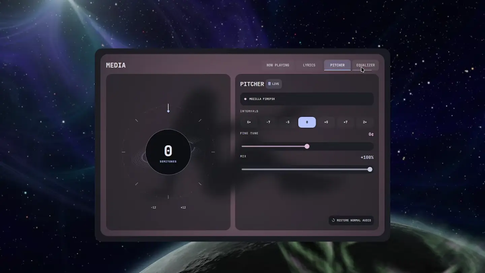

← THE INSTRUMENT DECK04 / 05
Resonance
More feeling. Fewer windows.
Playback, lyrics, audio routing, and visual feedback in one rounded desktop console.

THE AUDIO CONSOLEPlayReach the media players your session exposes through MPRIS.
ReadKeep track details and available lyrics beside the controls.
ShapeExplore routing, volume, equalizer profiles, and spectrum feedback.
INSIDE RESONANCEA place for
Explore the source ↗A place for
the details.
Your player, clearly
Switch between discovered players and keep playback controls close at hand.
Lyrics, when available
The lyrics helper looks up track metadata through LRCLIB and caches results; missing lyrics stay an honest state.
Route the sound
Inspect available audio outputs and use the session’s supported routing controls.
Contained ambience
Artwork, spectrum, and atmosphere sit inside the console’s rounded boundary.
PUT IT TO WORK
Put your music in reach.
After installing, open the media console or the audio instrument. Player capabilities can vary.
Get Tonantzintla ↗blackhole open media blackhole open audio